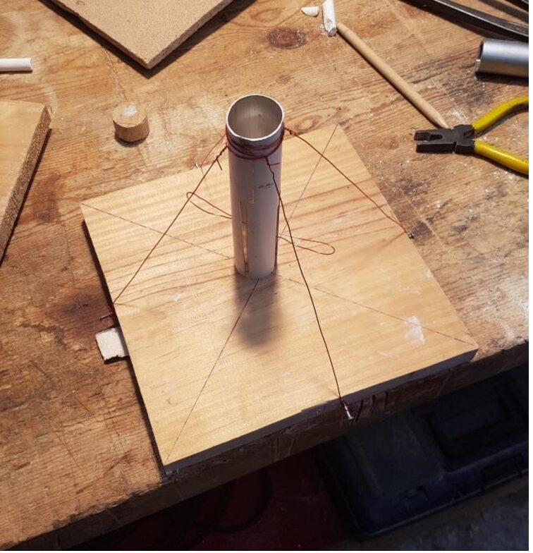
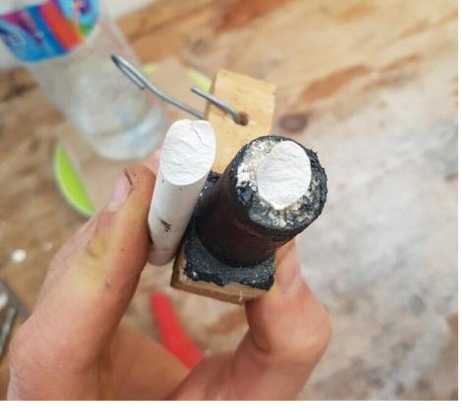
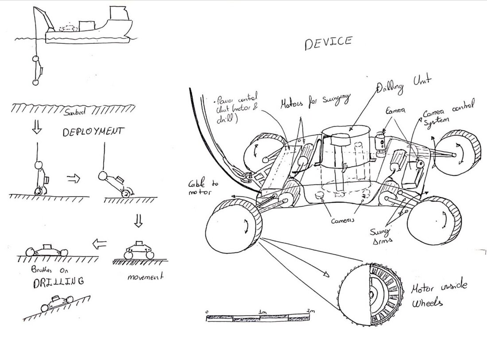
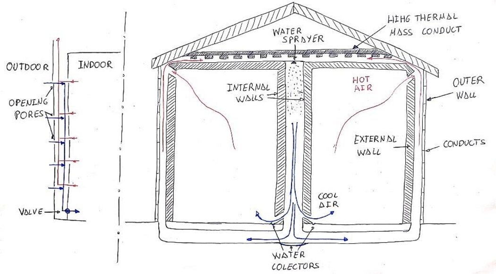
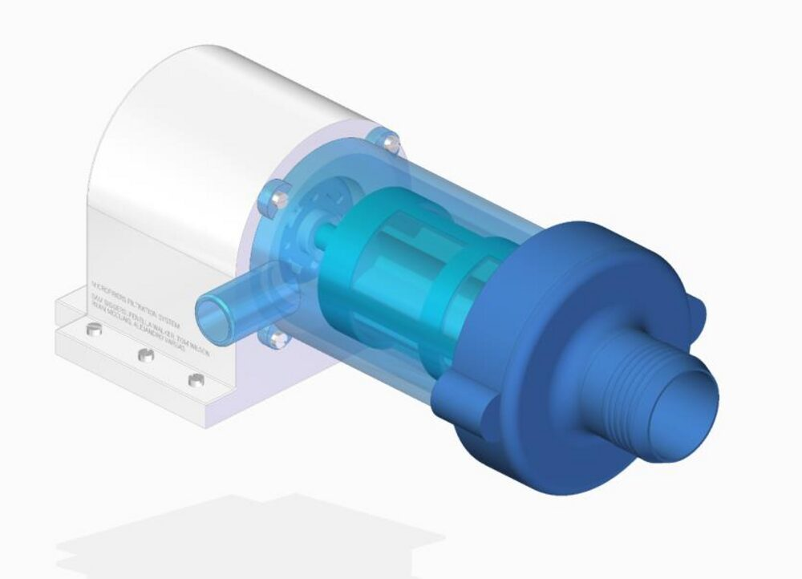
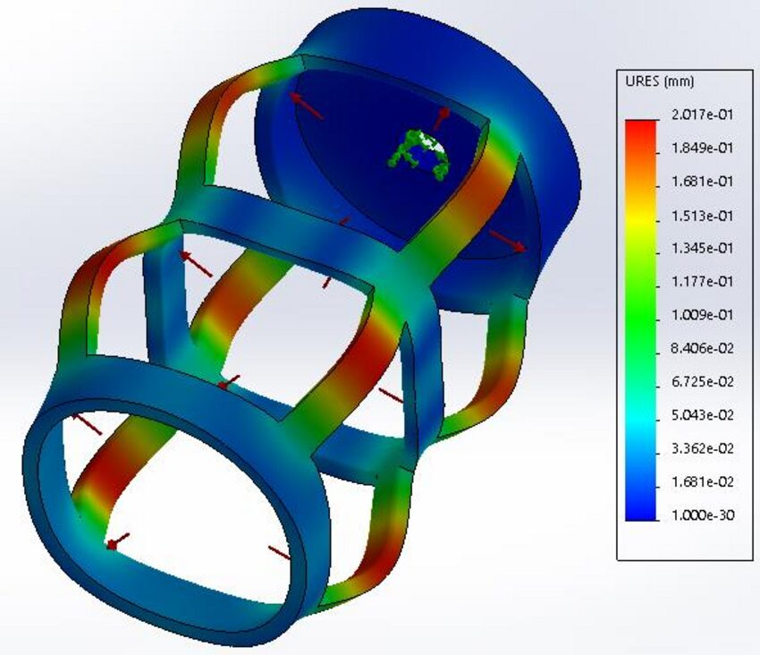
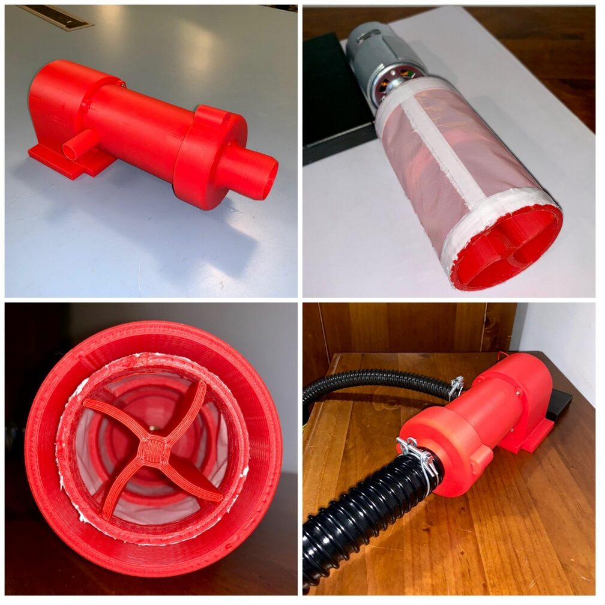

Sample concept studies
Different domains — test engineering, subsea machinery, building physics, consumer products — but the same method every time: strip the problem to physics, generate genuinely distinct options, judge them honestly, and put a recommendation on the table.
Quantifying the mechanical limits of school chalk with no lab, no testing machine, and no reference data to compare against.
Find the failure strength of ordinary chalk under five load types — bending, tension, shear, torsion and compression — using only household tools. Each load type had to be isolated cleanly, or the number would be meaningless.


Bending & tension — water-bottle load cells. A bottle filled gradually until fracture, weighed on a kitchen scale, gave a repeatable force. Two opposed constrictor knots kept the tension load perfectly axial.
Pure shear — twin-plate guillotine, v2. The first rig let the sliding plate rotate, binding on its rails and adding friction that corrupted the reading. Fix: a larger contact surface and four guide rods instead of two, removing the parasitic moment.
Torsion & compression — isolation rigs. A grease-packed homemade bearing isolated torsion (residual friction measured and subtracted); a piston-and-cylinder press, borrowed from hydraulic-press principle, kept a high compressive load axial where a simple stack would topple.
Consistent, physically sensible failure values across all five cases — with variance tightest for the simplest rig and widening as the apparatus grew, exactly as expected. The real deliverable: a documented method for reaching a defensible answer from nothing but improvised tools and clear reasoning.
Embodiment design for a remotely operated tool that drills the ocean floor — a novel machine with no off-the-shelf precedent to copy.
Develop an early seabed-drilling concept into a defensible embodiment design: size the components, choose materials, identify failure modes, and estimate cost — all under deep uncertainty.

Architecture — sealed chassis + modular drill. A cable-and-winch-deployed sealed chassis, with the drill mounted on silent-blocks like a car engine, isolating vibration and keeping the design modular.
Mobility — in-wheel motors + swing arms. Four independent in-wheel motors, with Mars-rover-inspired swing-arm suspension that adapts to uneven seabed and locks flat while drilling.
Material & process selection. Ashby-chart selection against explicit objectives — leak-before-break for the chassis, hardness and corrosion resistance for the wheels, flexibility-without-failure for the arms — each paired with a realistic manufacturing route.
Reframing a big-building cooling principle into a self-regulating family house.
Building cooling consumes a large share of global energy and emissions — and the existing termite-inspired designs exist only at large commercial scale. The challenge: extract the underlying principles and apply them to an ordinary family house that regulates its own temperature with little or no active cooling.

Extract. Distil the termite mound to its transferable mechanisms — heat-induced convection between low- and high-thermal-mass structures, and Venturi-driven induced flow — rather than copying its shape.
Translate. Re-express those as five concrete design features: an outer air-gap, high-thermal-mass internal walls and conduits, low-mass breathing outer walls, a connected chimney-and-flute network, and an optional water pulveriser for evaporative cooling.
The outer walls heat quickly and drive a stack-effect flow; air is cooled against the overnight-charged walls and by evaporation, then delivered to the floor. The loop reverses at night and stops in winter. Rather than asserting it would work, a first-order stack-effect calculation estimated a flow of ~0.46 m/s for a 100 m² house — enough to show viability and to flag a full thermo-fluids study as the honest next step.
A washing-machine filter to capture clothing microfibres before they reach the ocean.
Synthetic clothing sheds microfibres too fine for conventional filters, and the products on the market are external add-ons with limited capture. The brief: design a filter that integrates into the washing machine itself, captures around 90% of fibres, survives the machine's full service life, and needs minimal user maintenance.

On a five-person team I owned the torque calculations, the stress and fatigue FEA, the final mesh selection, the prototype manufacturing, and a share of the concept sketching. Pump-blade design and the CFD flow study were led by teammates — noted here as context where they connect to my work; the analysis and build below are mine.
Instead of passing flow through a filter set across the pipe — limited to the pipe's cross-section — spin a cylindrical filter so the flow is driven radially outward against the full cylinder wall. The effective filter area becomes the cylinder's surface, not its cross-section: far more area in the same space, a longer time before the mesh clogs, fewer user interventions. And the cylinder packs into the dead space behind the machine's existing service hatch, leaving the exterior untouched.
Mesh selection. A 25 µm nylon mesh, weighed against pore size, mechanical strength, cost and recyclability — nylon beat stainless on mass and recyclability while meeting the pore and strength needs.
Drive sizing. Worst-case start-up torque (blades saturated and stationary, snapping to full speed) sized the motor; the realistic case showed an inexpensive 12–18 V DC motor was sufficient, keeping cost and added power draw negligible.
FEA. Static and fatigue simulations on the outer case, inner case and propeller. The casing showed a large safety factor and a predicted life far beyond the washing machine's — and the analysis singled out the inner-case shaft crossing as the weakest point.


A full arc from an open brief to a costed concept to a tested physical prototype — including a failure the analysis predicted and the test then confirmed. That agreement between model and reality, failure included, is the most useful result an early-stage study can produce: it shows the engineering judgement was sound, not just lucky.
Concepts sketched, tradeoffs named, a recommendation you can defend. And if you want to go further afterwards — developed design, 3D-printed functional models, a full working prototype — that door stays open. Each study above is also downloadable as a one-page PDF, if you'd rather keep one to hand.
Request a quote